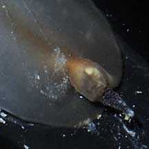
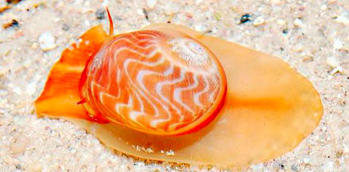

|
|
| shelled snails text index | photo index |
| Phylum Mollusca > Class Gastropoda > Family Naticidae |
| Zebra
moon snail Tanea areolata Family Naticidae updated Aug 2020 Where seen? Sometimes seen on our Southern shores, this fast moving moon snail is seen near coral rubble and living reefs. It was previously known as Natica areolata. Features: 2-3cm. Shell smooth thick spherical (not flat) with the spiral tip sticking out a little. Shell pattern brown with spirals of white zig-zag lines. On the underside, a small circular depression. Operculum plain pearly white with a yellow smudge where the whorl starts, a pair of spiralling grooves on the outer margin. Foot plain white with a dark bar on the back portion, the front portion beige with three white bars. Tentacles short, white with dark tips. Snail takeaway? Some have been seen 'dragging' a small snail shell behind them attached to the foot. Is it taking the meal away to some other place to eat it in safety? |
 Sisters Island, May 08 |
 Dragging a tiny snail shell at the tip of the foot. |
 Small depression on underside. Operculum pearly white with yellow smudge. St John's Island, Aug 05 |
*Species are difficult to positively identify without close examination.
On this website, they are grouped by external features for convenience of display.
| Zebra moon snails on Singapore shores |
On wildsingapore
flickr
|
| Other sightings on Singapore shores |
 Cyrene Reef, Aug 12 |
Links
|